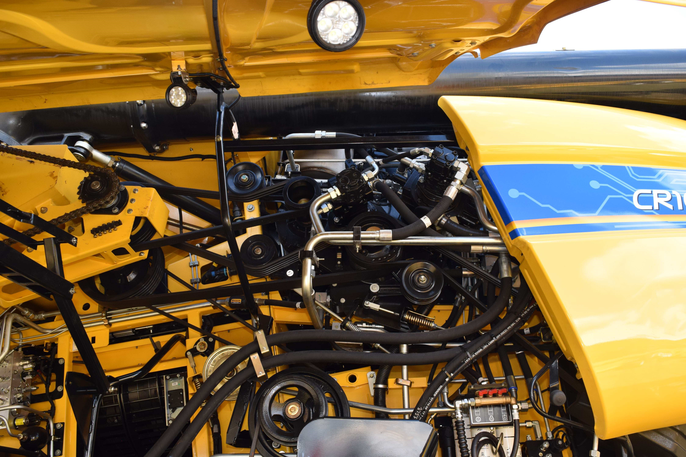

Using augmented reality on a smartphone to aid with machine maintenance
Problem statement
CNH Industrial designs, manufactures and sells combine harvesters from Zedelgem, Belgium. A combine harvester (dutch: maaidorser) is what we call a factory on wheels. It is used to harvest grain crops, wheat, barley, rye, corn, soybeans, peas,… This is a large and complex machine with lots of moving parts. For the operator of the machine it is hard to learn every little detail of the machine.

Goal
In this thesis we want to build an app for a smartphone that would aid the operator in locating certain parts on the machine for maintenance and error-tracking. The app would use images from the smartphone and augment the image with instructions, directions on the screen. To achieve this, a 3D model of the machine (e.g. from a 3D scan or CAD model) will need to be matched to a 3D model build on the smartphone. The challenge is to first build this model using a single camera (not a stereovision camera) as it is commonly found on smartphones. A second challenge is to make the 3D matching robust to variations in camera properties, lighting conditions, dirt levels on the machine, etc.
This thesis is in close collaboration with CNH Industrial designs. CNH designs, manufactures and sells combine harvesters from Zedelgem, Belgium.

This thesis has been conducted by Hamlet Marekhashvili (Hamlet.Marekhashvili@UGent.be).